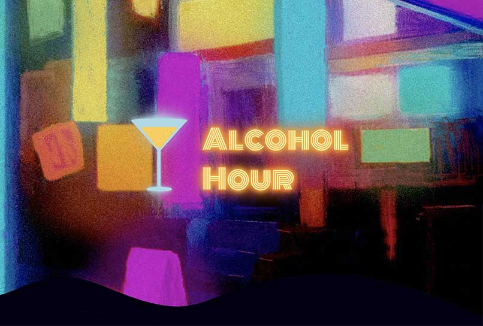

WORKS
Alcohol Hour
https://chita-hp.com/alcohol/
サービス概要
コロナの影響で気軽にバーに飲みに行けなくなったので
バーの雰囲気のあるサイトを作りたくて制作しました。
以前Pythonで制作したアルコール度数計算機を
Webサイト用にJava scriptで書き直しました。
Unityで2Dゲームを制作し、Servlet&JSPで
データベースと接続しランキング表示出来るようにしました。
セールスポイント
- グラス、ボタンなど後からアニメーションをつけるためCSSで構築しました。
- 電飾、泡、波、テレビ画面などをCSS＆JavaScriptでアニメーションをつけました。
- 2Dゲームはアセットを使わずUnityで制作しました。
- Servlet&JSPでDBにアクセスしJSONでかえしUnityでランキング表示する機能をつけました。
使用技術
- JavaServlet/JSP
- MySQL
- Unity
- JavaScript
- HTML5
- CSS3
使用例
- コップをクリックし計算
- ゲーム機をクリックしDrunk Game
- 赤いボタンをクリックしBAC計算
トップ画面から下にスクロールしコップをクリック。
するとアルコール度数計算機が表示されます。
数値を入力するとコップの液体の色が変化します。
計算ボタンを押すとアルコール度数と水割りの量が表示されます。
クリアを押し、コップを押すと計算機が非表示になります。
ゲーム機をクリックするとゲームのスタート画面が表示されます。
画面にカーソルをあわせクリックするとゲームスタート
矢印キーの←と→で移動して落下するお酒をゲットします
制限時間が終わるとポイントとランキングが表示されます
画面右上の×ボタンで画面を閉じます。
ページ下部にある赤いボタンをクリックすると映像が流れます
エンドロール風に流れるアルコール血中濃度計算機です。
数値を入力し計算ボタンを押すと計算結果が表示されます
改善点
- 計算機改善
- 2Dゲーム改善
- アルコール血中濃度計算機改善
コップをクリックして計算機が表示されたときに
Java Scriptで画面を自動スクロールし
計算機の表示が分かりやすいようにしたいです。
BAC(アルコール血中濃度)の値が0.48%以上になると
ゲームオーバーになるようにしたいです。
値を入力するまでは文字を静止し判定ボタンをクリックしたら
エンドロールが流れるようにしたいです。